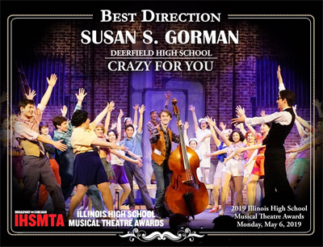
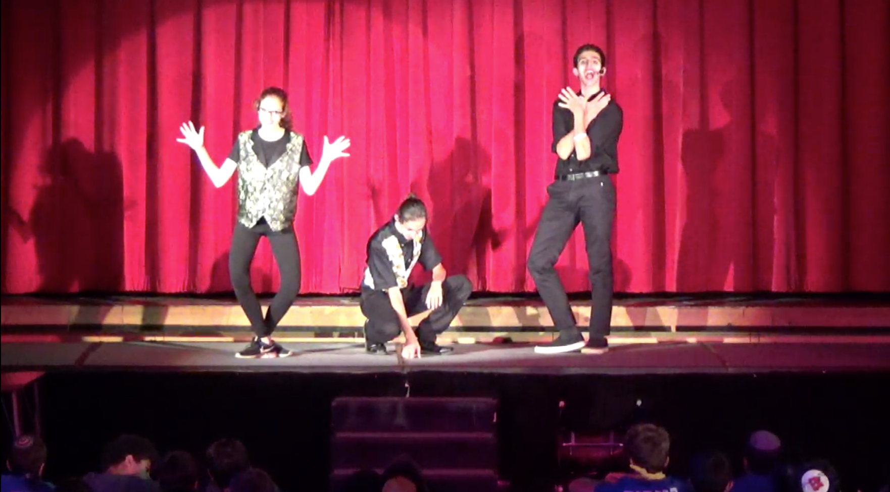

In 2019, I auditioned and made it into the 2019 production of Crazy For You as a Cowboy/ Bartender. Over the several months of rehersal I learned many things about musical theatre and how to enhance my performance. In addition, the musical got awards such as best actor, best director and more from the Illinois High School Musical Theatre Awards.
Over the summer of 2019, it was my job to help with electric equipment, set the lights and use the sound board for the numerous amounts of musicals that were done at Camp Ramah in Wisconsin. My finest work was in the musical Cabaret, that included many unique timings and colors for the lights. Despite not being able to be in the musical, I was able to support the cast through the lights and sound.
